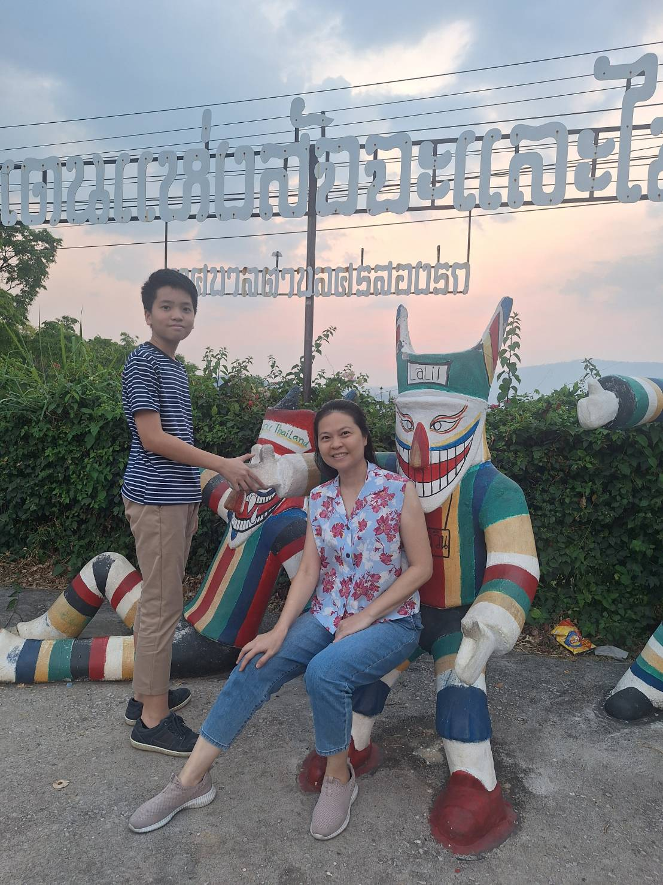
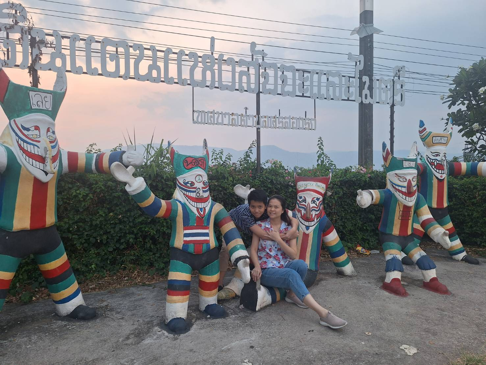

วันแม่แห่งชาติ✨
ผมรักแม่ที่สุดในโลก 👽👾👾👾👾👾🤖🤖🤖🤖🤖💩💩💩💩💩💩🐱👤🐱👤🐱👤😾😾😾😾😾👾👽😻☠😻😻😹😽😽😼🙀🙀🙀😾😿😿💩🙈🐱👓🙈🐱👓🐱👓😻🐯🙉🙉🐴🐸🐸🐸
สิ่งที่อยากจะบอกแม่

ขอให้แม่สุขภาพร่า'กายแข็งแรงนะคับ

บทกลอนมอบให้แม่
มีกี่คนให้เราได้ทั้งชีวิต
ไม่เคยคิดจะทอดทิ้งหรือทำร้าย
ใครคนนั้นท่านก็คือแม่เราไง
แม่ทุกกายลูกสุขใจแม่ยอมทน
บทเพลงมอบให้แม่